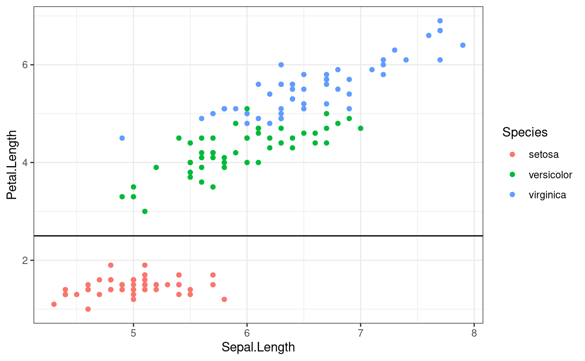
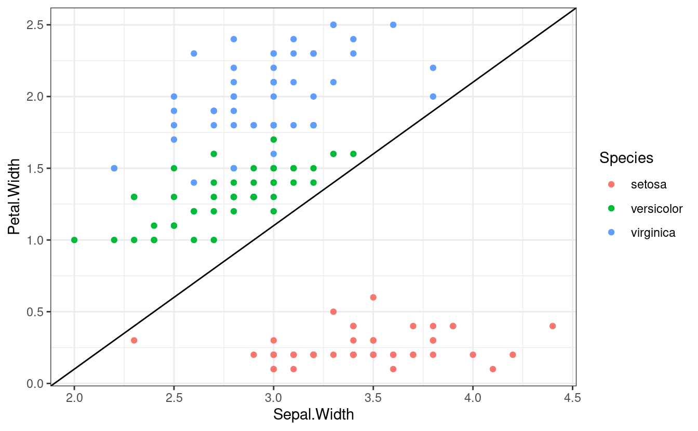

10 MLE
10.1 Binary Dependent Variables
While STATA has seperate commands for different MLE models (logit, nbreg, etc.), R combines some models into single commands. We can use zelig(), the command we learned earlier, and just change the model = portion. Alternatively, there are commands such as glm(), which do the same thing outside of the Zeligverse. We’ll loog at some examples with the iris dataset.
library(modelsummary)
library(tidyverse)
library(Zelig)
theme_set(theme_bw())
head(iris)
#> Sepal.Length Sepal.Width Petal.Length Petal.Width Species
#> 1 5.1 3.5 1.4 0.2 setosa
#> 2 4.9 3.0 1.4 0.2 setosa
#> 3 4.7 3.2 1.3 0.2 setosa
#> 4 4.6 3.1 1.5 0.2 setosa
#> 5 5.0 3.6 1.4 0.2 setosa
#> 6 5.4 3.9 1.7 0.4 setosa
summary(iris)
#> Sepal.Length Sepal.Width Petal.Length Petal.Width
#> Min. :4.300 Min. :2.000 Min. :1.000 Min. :0.100
#> 1st Qu.:5.100 1st Qu.:2.800 1st Qu.:1.600 1st Qu.:0.300
#> Median :5.800 Median :3.000 Median :4.350 Median :1.300
#> Mean :5.843 Mean :3.057 Mean :3.758 Mean :1.199
#> 3rd Qu.:6.400 3rd Qu.:3.300 3rd Qu.:5.100 3rd Qu.:1.800
#> Max. :7.900 Max. :4.400 Max. :6.900 Max. :2.500
#> Species
#> setosa :50
#> versicolor:50
#> virginica :50
#>
#>
#>
ggplot(iris) +
geom_point(aes(x = Sepal.Length, y = Petal.Length, color = Species)) +
geom_hline(yintercept = 2.5)
ggplot(iris) +
geom_point(aes(x = Sepal.Width, y = Petal.Width, color = Species)) +
geom_abline(intercept = -1.9) 
This dataset, originally collected by Ronald Fisher, looks at three different species of iris: setosa, versicolor, and virginica. It provides information on the length and width of flowers’ petal and sepals. Looking at the data, we can see that setosas are rather distinct, and easy to seperate graphically. Veriscolor and virginia are more similar, so we’ll examine them statistically. We can create a new dataframe with the filter() command we learned in Modeling and Wrangling.
To predict whether a flower is setosa or virginica, we could use a logit model.
logit Species Sepal.Length Sepal.Width Petal.Length Petal.WidthIn R, we estimate a logit by specifying model = "logit" in zelig().
iris.logit <- zelig(Species ~ Sepal.Length + Sepal.Width + Petal.Length +
Petal.Width, data = iris.binary,
model = "logit", cite = FALSE)IF we want to instead estimate a probit model, in STATA, we change the command.
probit Species Sepal.Length Sepal.Width Petal.Length Petal.WidthIn R, we change model =.
iris.probit <- zelig(Species ~ Sepal.Length + Sepal.Width + Petal.Length +
Petal.Width, data = iris.binary,
model = "probit", cite = FALSE)models = list(
`Logit` = from_zelig_model(iris.logit),
`Probit` = from_zelig_model(iris.probit)
)
modelsummary(models = models, stars = TRUE)| Logit | Probit | |
|---|---|---|
| (Intercept) | -42.638* | -23.985* |
| (25.707) | (13.843) | |
| Sepal.Length | -2.465 | -1.440 |
| (2.394) | (1.272) | |
| Sepal.Width | -6.681 | -3.778 |
| (4.480) | (2.556) | |
| Petal.Length | 9.429** | 5.316** |
| (4.737) | (2.435) | |
| Petal.Width | 18.286* | 10.486* |
| (9.743) | (5.614) | |
| Num.Obs. | 100 | 100 |
| AIC | 21.9 | 21.8 |
| BIC | 34.9 | 34.8 |
| Log.Lik. | -5.949 | -5.876 |
| * p < 0.1, ** p < 0.05, *** p < 0.01 |
10.2 Counts
Count models tend to fall into two categories: Poisson and negative binomial. Poisson models assume an even dispersion, with the mean equal to the variance, while negative binomial accout for overdispersed data.
summary(diamonds)
#> carat cut color clarity depth
#> Min. :0.2000 Fair : 1610 D: 6775 SI1 :13065 Min. :43.00
#> 1st Qu.:0.4000 Good : 4906 E: 9797 VS2 :12258 1st Qu.:61.00
#> Median :0.7000 Very Good:12082 F: 9542 SI2 : 9194 Median :61.80
#> Mean :0.7979 Premium :13791 G:11292 VS1 : 8171 Mean :61.75
#> 3rd Qu.:1.0400 Ideal :21551 H: 8304 VVS2 : 5066 3rd Qu.:62.50
#> Max. :5.0100 I: 5422 VVS1 : 3655 Max. :79.00
#> J: 2808 (Other): 2531
#> table price x y
#> Min. :43.00 Min. : 326 Min. : 0.000 Min. : 0.000
#> 1st Qu.:56.00 1st Qu.: 950 1st Qu.: 4.710 1st Qu.: 4.720
#> Median :57.00 Median : 2401 Median : 5.700 Median : 5.710
#> Mean :57.46 Mean : 3933 Mean : 5.731 Mean : 5.735
#> 3rd Qu.:59.00 3rd Qu.: 5324 3rd Qu.: 6.540 3rd Qu.: 6.540
#> Max. :95.00 Max. :18823 Max. :10.740 Max. :58.900
#>
#> z
#> Min. : 0.000
#> 1st Qu.: 2.910
#> Median : 3.530
#> Mean : 3.539
#> 3rd Qu.: 4.040
#> Max. :31.800
#>